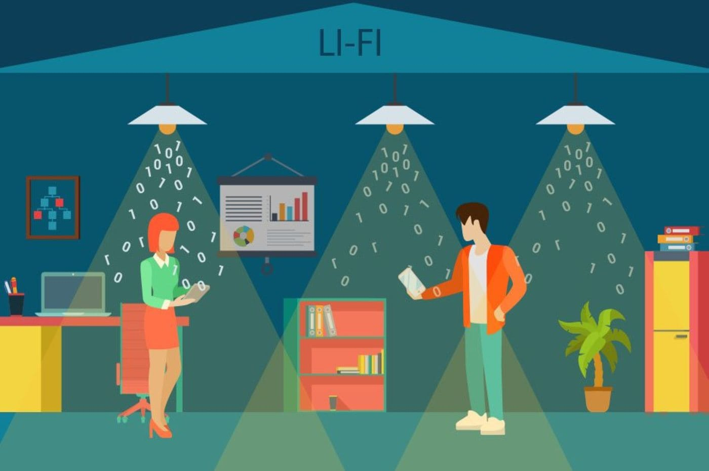

Intro

I've recently asked myself : now that I want to rebuild my website entirely, what should I show on my personal website ?
When I created my first website, I was 15 years old, and I was only using it to put a gallery of my family's pictures and to put the music I was creating online.
Then, I started learning programming languages, and it became the place where I was testing my skills and showing them to my parents and friends. Some of them liked what I was doing, and asked me to build their personal websites or the websites of their companies.
When I was at the university, my website became a showcase one, a place to discover the websites I created and the companies and public establisments I worked for as a freelance.
Since the end of the university and the beginning of work, things have changed. My free time is now dedicated to travel, have new passions, build things and learn while going to Meetups or while using MOOCs.
In the meantime, my everyday's work let me improve my skills of Development and Management.
One of the common things between my personal and professional life is that I do code, and my website is going to present you this part of my life.
On the footer of the website, you can also access to some extra things such as my passions =)
Have a good visit on my website =D

Basketball app to find players around and organize a game
We developed Android / iOS / Web apps for a startup which goal was to create an app for basketballers.
On the app, you can see fields around you, planned games and joined a game or create a game and ask for other potential players to join you.
Shummy is a food sharing project developed during an international summer school
The goal of Shummy for its users is to offer meals and manage them on the go using a mobile.
Users can search for meals, see cookers’ and eaters’ profiles and ratings and reserve meal directly online.
DISCOVER
Online Greeting Cards, made for those who like to share life's little pleasures
With the current version, you can send an online greeting card to someone you like for a special event.
Choose a type of greeting car, enter the recipient's name (his / her name will be displayed) and share the link for your friend to enjoy it! =)
DISCOVER
Watch My Health is a multi-platform app made to support anyone's health journey
We worked on the first Wear OS Application that lets you track multiple physical activities such as the heart rate and the number of steps.
The Android app connected to it lets the user see live tracked elements while the web app is made of graphics to analyze user's evolution day-by-day.
CHECK IT OUT ON GITHUB
Animated 3D cube using CSS3 perspective, rotations and animations features
I wanted to try CSS3 new features and build a cube in 3D with interactions without using any JavaScript.
The first step is to constitute the cube from differents layers and then makes it rotate on itself. On mouse over the cube, the cube expands in a fluid way.
DISCOVER

Pleasant and simple to use video player with cool CSS animations
I wanted to re-think the folders/files design such as we use it everyday on our computers and wanted to make something pleasant to use.
These videos launch on a web player I developed specifically for this project to be complete.
DISCOVER

Android application working with LiFi made for the International Perfume Museum of Grasse
With other software engineers from the University, we created an Android application for a Museum in France.
The application works with LiFi, so that when a user is near an artpiece, its description, photos and videos are displayed directly on his mobile.
CHECK IT OUT ON GITHUB

A Micro Blogging App for those who enjoy writing news
This website was made with JavaEE using Web Services REST Jersey and its purpose is to let anyone creates its own blog.
An administrator is allowed to create new content or modify / delete existing articles while a simple user can only consult the blog articles.
CHECK IT OUT ON GITHUB
A banking app to manage a list of clients, money transactions, transfers, financial operations
The goal was to implement an autonomous and international banking application in JavaEE and connected to a database.
We implemented this software for a specific course at the Université Côte d'Azur.
CHECK IT OUT ON GITHUB
Career Path
In 2016, I completed two Master's Degrees in MIAGE (Business Informatics) and MBDS (Mobiquity, Web Development and Databases), from the Université Côte d'Azur.
I have spent five years at the University, studying, and also developing my skills as a freelance. I mostly worked for companies which needed a website or an Android application to improve their sales.
During this last year of studies, I also worked at Sopra Steria for the biggest project of this company, a web application to manage retirement processes in France. The database used had millions of entries so the challenge of this app was to handle an important amount of data while still being fast and efficient.
After having graduated, I wanted to start my career in a more dynamic city than Nice.
So, I decided to move to Paris and work in a startup : Reezocar.
My goal was to build the CRM of the company from scratch and managing all the projects and staff working on it
I am interested in exploring career opportunities in IT and I would like to build a career that lets me focus on professional growth (management, technical skills, ...).
If you like my profile, don't hesitate to contact me ;)
Contact